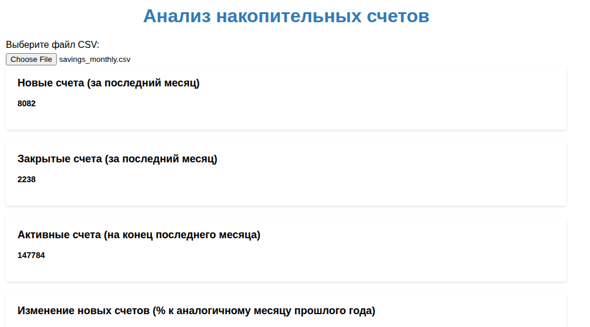
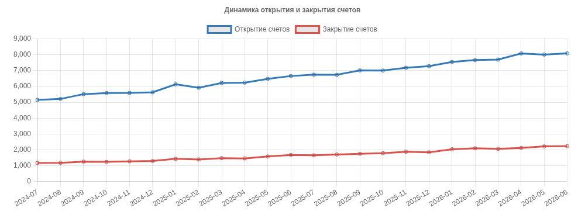
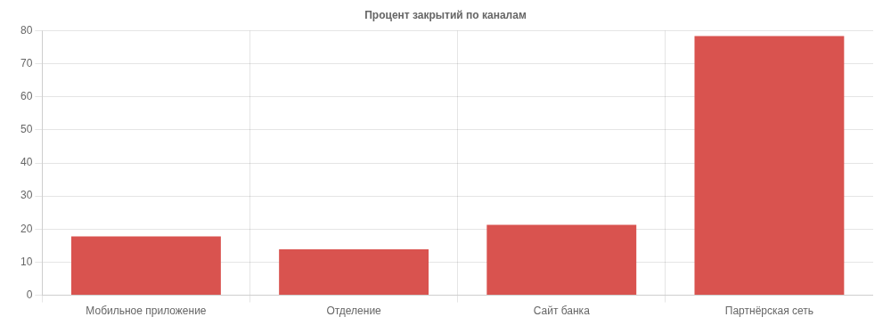

Ассистент получает описание таблицы — не сами данные — и возвращает готовую страницу, которая читает выгрузку прямо в браузере. Программировать не нужно; нужно уметь принять чужой результат.
Накопительный счёт растёт по всем каналам — или рост в одном месте оплачивается оттоком в другом?
Выгрузка — помесячные данные по накопительному счёту: savings_monthly.csv, 24 месяца, пять регионов, четыре канала привлечения, 480 строк. Все материалы кейса — в папке репозитория практики.
Только структура таблицы и словесное описание полей. Строки не передаются: страницу ассистент пишет по описанию, а выгрузку открывает уже ваш браузер — данные остаются на вашей машине.
Скопируйте промпт и отправьте одним сообщением. В нём перечислены поля выгрузки, требования к содержанию страницы и условие о том, что данные не должны никуда отправляться.
Ты — ассистент продуктового аналитика банка. Сделай одностраничный HTML-отчёт для анализа выгрузки по накопительному счёту. Данные: CSV-файл savings_monthly.csv в кодировке UTF-8, разделитель — точка с запятой, десятичный знак — запятая. Колонки: - месяц — в формате ГГГГ-ММ, 24 месяца подряд; - регион — один из: Центральный, Северо-Западный, Южный, Уральский, Сибирский; - канал — один из: Мобильное приложение, Отделение, Сайт банка, Партнёрская сеть; - новые_счета — число открытых счетов за месяц; - закрытые_счета — число закрытых счетов за месяц; - активные_счета_на_конец_месяца — число действующих счетов; - средний_остаток_тыс_руб — средний остаток на счёте, тысяч рублей. Сами данные в запрос не передаю. Страница должна открываться локально в браузере, предлагать выбрать CSV-файл кнопкой и строить всё в браузере, никуда не отправляя данные. Что должно быть на странице: 1. Карточки с итогами за последний месяц: новые счета, закрытые счета, активные счета, изменение новых счетов к тому же месяцу год назад в процентах. 2. График динамики новых и закрытых счетов по месяцам — две линии. 3. Сравнение каналов: новые счета за последние 12 месяцев, доля закрытых к новым, средний остаток — столбчатые диаграммы. 4. Разбивка новых счетов по регионам с возможностью отфильтровать по каналу. 5. Выпадающие списки «канал» и «регион»: при выборе графики динамики пересчитываются по выбранному срезу. Для графиков используй Chart.js, подключённый с CDN. Все подписи по-русски. Ответ дай одним HTML-файлом без пояснений вокруг.
Сохраните ответ как файл с расширением .html, откройте двойным щелчком и выберите выгрузку кнопкой на странице.
Пройдите по пяти проверкам ниже. Первая версия их не проходит: страница выглядит законченной, а числа в ней неверны.
Второй запрос — это список найденного, а не «переделай нормально». Вместе с ним ассистенту передаётся его же предыдущий ответ целиком, иначе он правит по памяти и теряет части страницы.
Я проверил страницу на данных. Найденные проблемы, исправь все и верни полный HTML-файл заново: 1. Карточки итогов неверны: в файле за один месяц двадцать строк (пять регионов на четыре канала), а код берёт только первую строку месяца. Нужны суммы по всем строкам последнего месяца, и сравнение год к году — тоже сумма к сумме. 2. График динамики строится по строкам файла без агрегации: 480 точек и повторяющиеся подписи месяцев. Нужно просуммировать новые и закрытые счета по месяцам — 24 точки. 3. Сравнение каналов свалено в одну диаграмму с общей осью: число счетов — десятки тысяч, доля закрытий — проценты, остаток — сотни. Разнеси на три отдельные диаграммы. Долю закрытий считай как сумма закрытых, делённая на сумму новых по каналу, а не как среднее построчных долей. 4. Выпадающие списки «канал» и «регион» ни к чему не подключены: при выборе ничего не меняется. Подключи: график динамики и карточки пересчитываются по выбранному срезу. 5. Подключена Chart.js версии 3, а настройки написаны для версии 2 (yAxes, title, legend в корне options) — они игнорируются. Приведи настройки к синтаксису Chart.js 4 и подключи chart.js версии 4 с CDN. 6. Средний остаток по каналу считай как среднее по строкам канала, а не деление на общее число строк файла. Исходное задание то же: страница работает локально, файл выбирается кнопкой, данные никуда не отправляются, подписи по-русски. Ответ — только полный HTML-файл. Для контекста ассистенту передаётся его же предыдущий ответ целиком — иначе он правит по памяти и теряет части страницы.
Проверки те же. Часть дефектов после исправления появляется заново в другом месте — что нашлось здесь, разобрано ниже. Итоговая страница после всех правок — 3.2.3_отчёт.html.
Применимы к любой странице или скрипту, полученному от ассистента.
Расчёты исправлены, но добавились два дефекта, которые обнаруживаются только запуском: обработчик фильтра передавал в разбор файл вместо его текста — страница переставала отвечать при первом же переключении, — а повторная отрисовка на том же холсте не удаляла прежний график.
Оба исправлены вручную и помечены в коде комментариями
ПРАВКА 1 и ПРАВКА 2; далее сняты метка кодировки
в первом заголовке, сортировка, изменявшая исходный массив, и ограничена
высота графиков.
Две итерации с ассистентом дают рабочую страницу быстрее, чем ручная вёрстка, но каждая итерация проверяется запуском и сверкой чисел. Ошибки ассистента здесь тихие: страница открывается, графики рисуются, числа неверны.



Управленческое следствие. Сравнение каналов по числу привлечений недостаточно: при таком уровне закрытий стоимость привлечения в партнёрском канале считается на удержанный счёт, а не на открытый. Число открытий как показатель эффективности канала в этом случае вводит в заблуждение.